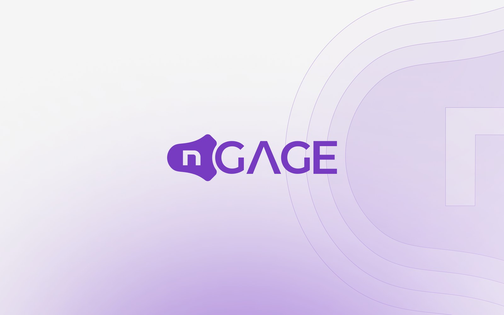

P. 03
nGAGE
Performance management SaaS for four user roles, on web and mobile, with faster feedback and shorter reviews.
- clicks to give feedback, tested with employees
- 2 → 1
- pages in the annual review
- 4 → 2
Full case study in progress